Casa Tempo
Uma casa que integra pátios verdes, ambientes fluidos e soluções bioclimáticas para acompanhar diferentes tempos de vida.
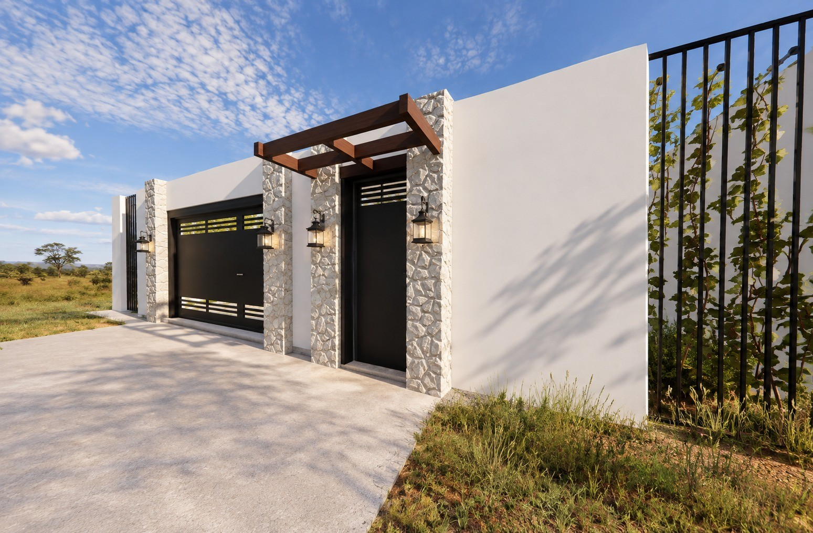
Conforto para o presente, flexibilidade para o futuro.
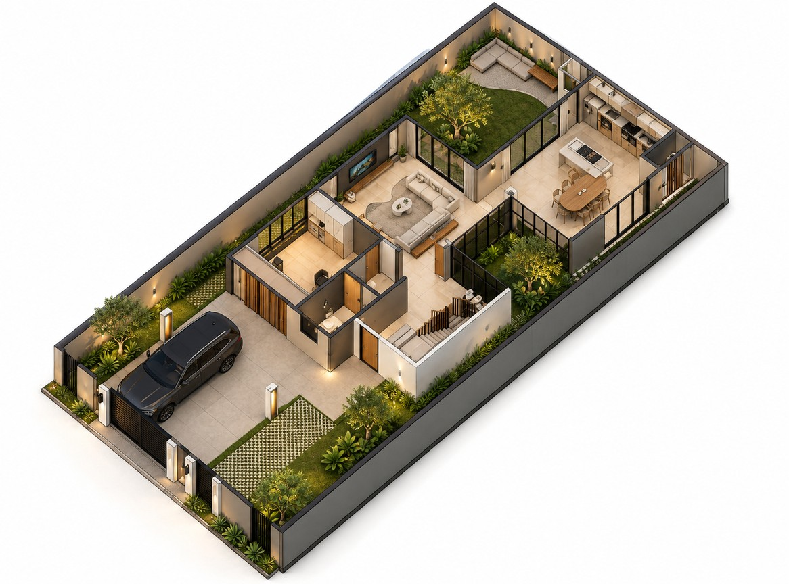
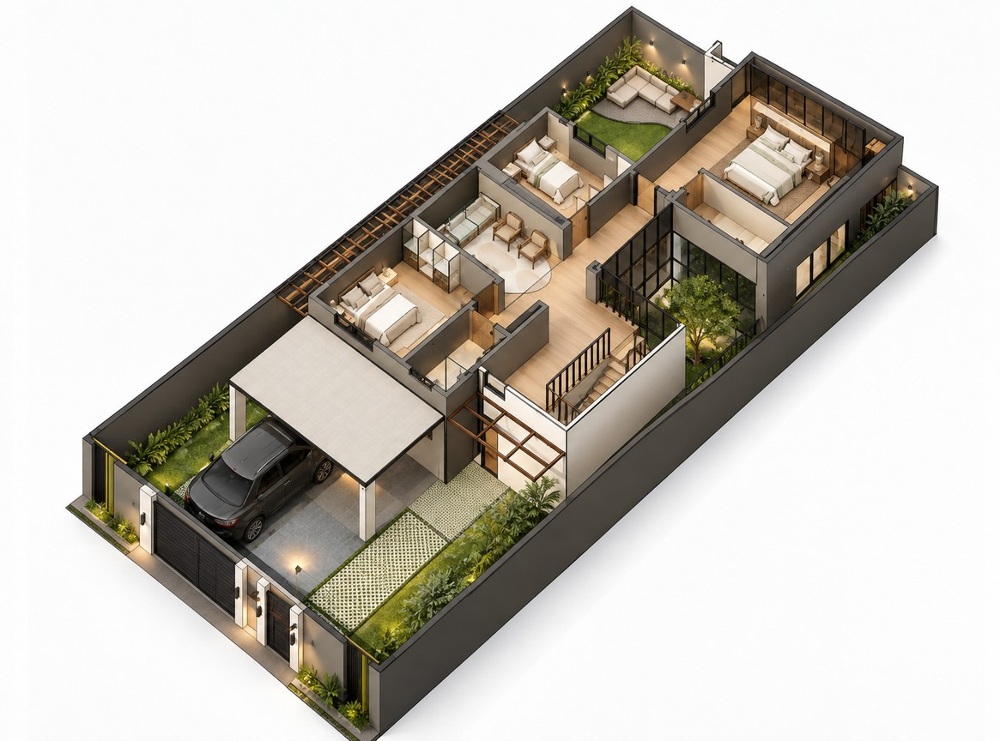
A distribuição dos ambientes e a configuração da escada foram planejadas para permitir adaptações de acessibilidade com intervenções mínimas.
A casa responde ao sol, à água e à paisagem.
Orientação solar
A fachada norte favorece a iluminação natural. Na frente oeste, menos aberturas expostas e elementos de sombra ajudam a controlar o calor da tarde.
Solo permeável
Grama e concregrama mantêm áreas laterais vegetadas, favorecendo infiltração, evapotranspiração e menor retenção de calor.
Paisagismo controlado
Árvores, arbustos e gramíneas funcionam como filtro solar e aproximam os espaços de permanência da natureza.
Ambientes que respiram com os jardins.
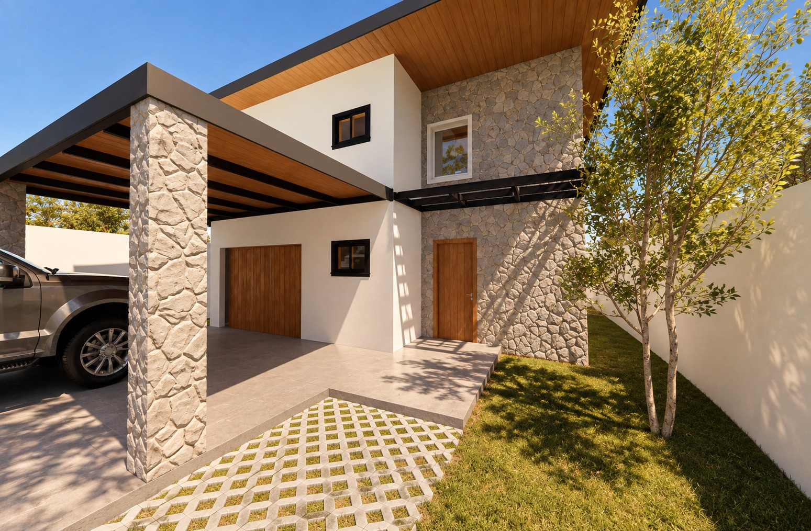
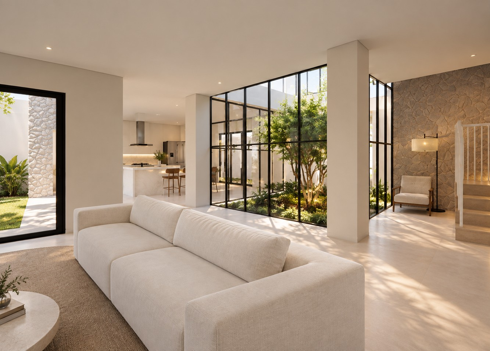
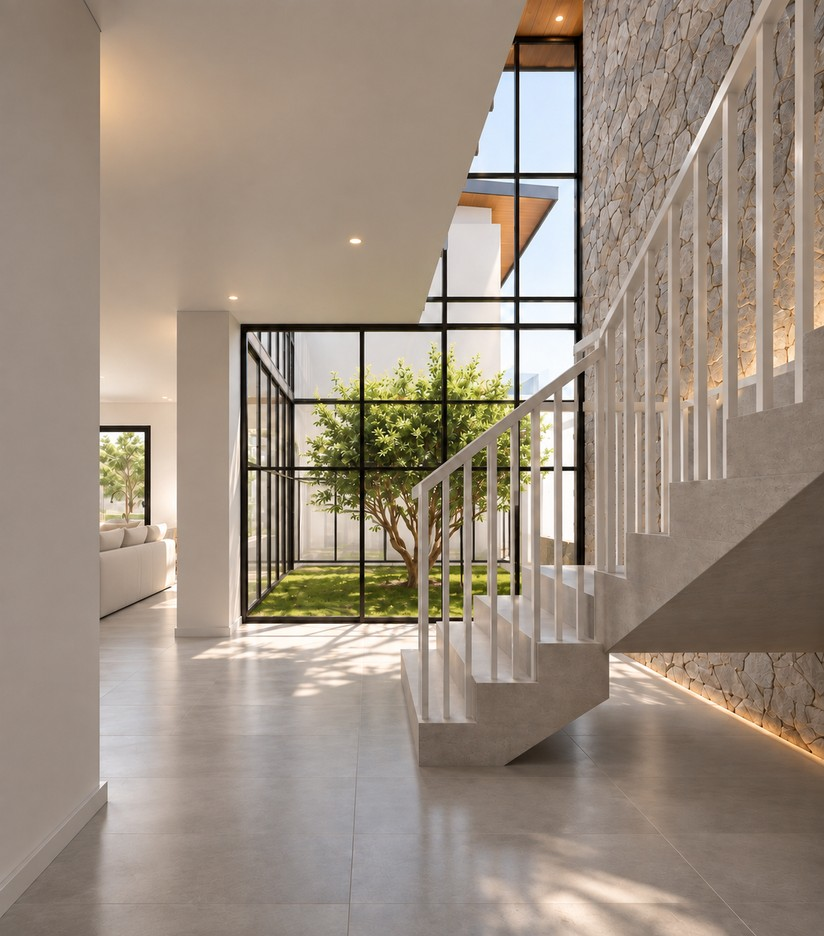
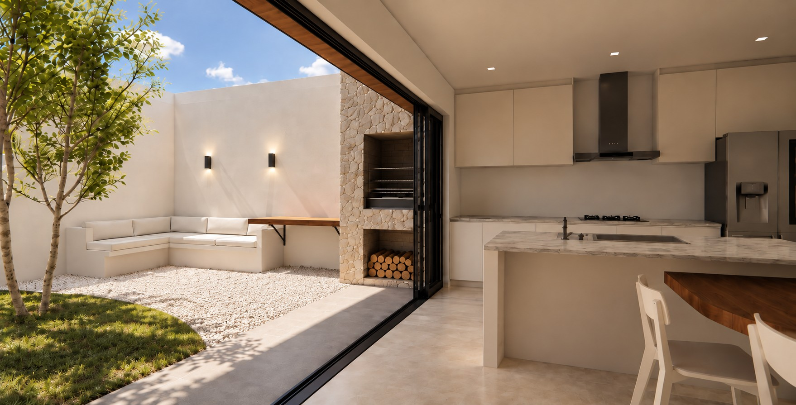
Dentro e fora em continuidade.
Sala, cozinha e área de lazer se abrem para pátios vegetados, criando espaços de encontro com luz natural, sombra e presença da paisagem.
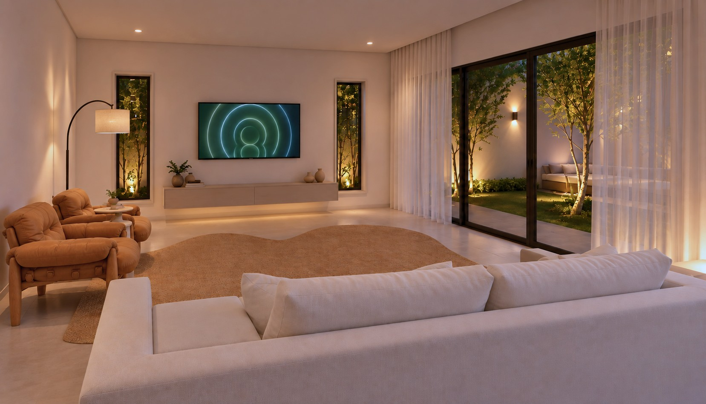
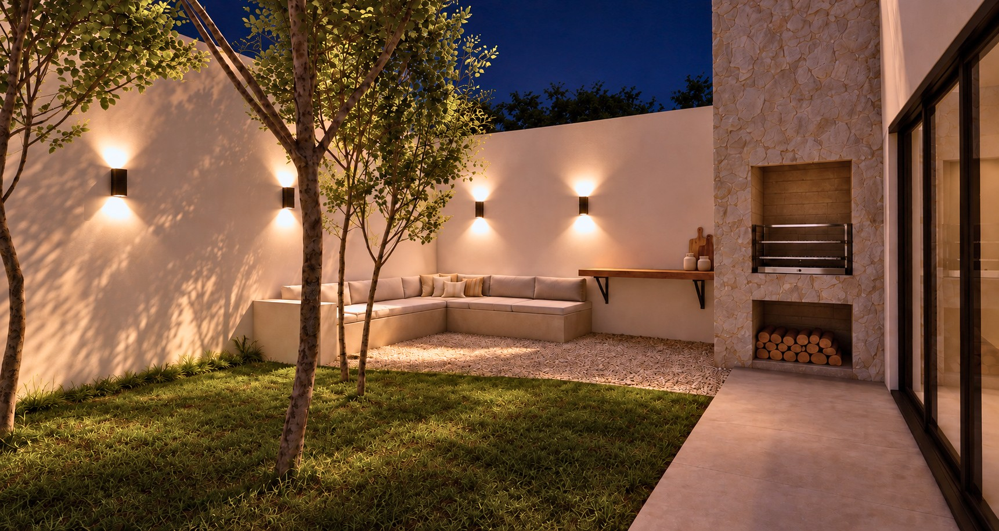
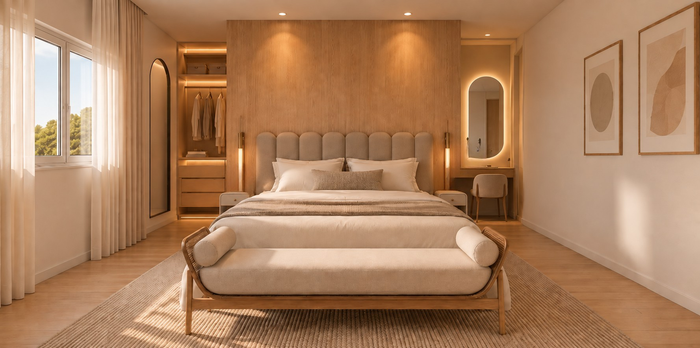
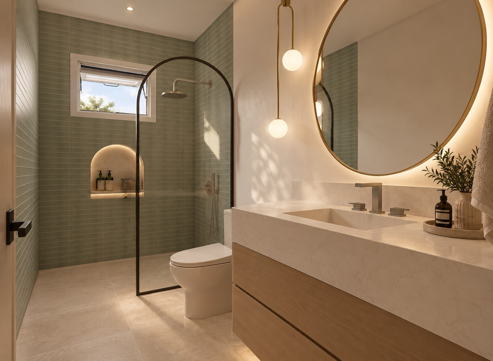